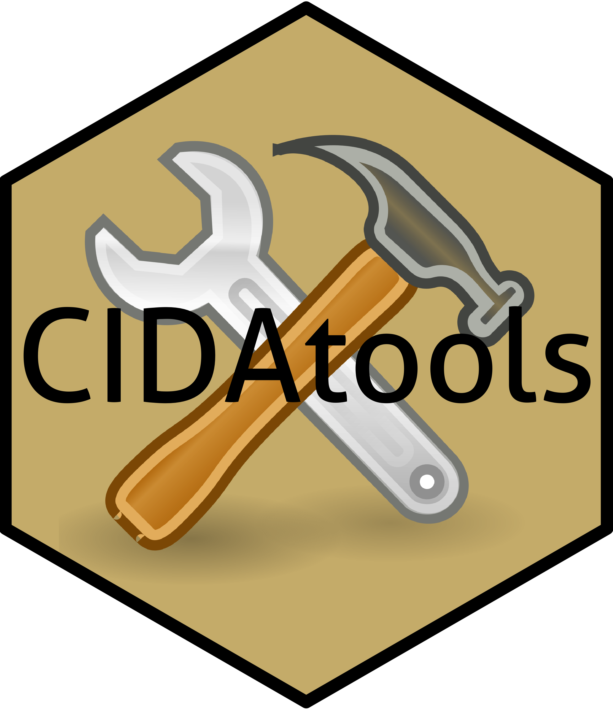

CIDAtools 

Overview
This package contains numerous templates and tools to make life at CIDA (part of the Colorado School of Public Health) happier and more efficient!
To install CIDAtools on your local machine:
# install.packages("devtools")
devtools::install_github('CIDA-CSPH/CIDAtools')Creating a new project
After CIDAtools is installed, a new CIDA project can be created using the Rstudio GUI (File>New Project>New Directory>New CIDA Project).
Or, to create a new project folder structure from the R console, navigate to the main project directory, and run:
create_project()Feel free to set the project name, PI, and analyst via the ProjectName, PI, or analyst arguments respectively, and see ?create_project for more details. If any of these are specified, they are stored as text in a hidden subdirectory called .ProjData, and can be called in subsequent R code anywhere in the project using ProjectName(), ProjectPI(), and ProjectAnalyst().
Creating a new CIDA report
Templates are useful for creating new documents with the correct CIDA formatting.
CIDAtools includes templates that can make it easy to create a new CIDA report. To use this functionality in Rstudio, first ensure the package is installed, then:
- Click on “New R Markdown”
- In the pop-up, select “From template”
- You should see CIDA report templates to choose from.
Alternatively, source code for templates is available in inst/rmarkdown/templates/.
Note: the CIDA Word report template contains multiple files, which are needed to specify the format for Word output. Therefore, CIDA Word reports must have their own subdirectory to start.
Outlines for CIDA reports
Outlines are intended to provide an idea of the content necessary within each type of CIDA report.
CIDAtools includes outlines for the following reports in inst/outlines/:
- CIDA Analysis Plan [download]
- CIDA Comprehensive Report [download]
- CIDA Exploratory Report [download]
- CIDA Omics Study Report [download]
- CIDA Study Design [download]
Backing up CIDA projects
CIDA project data and reports should be either kept on the CIDA shared drive (the P drive), or backed up (i.e. copied) to the shared drive on a regular basis.
Since the P drive can sometimes be slow to read/write on, CIDA members can work on a project locally if they regularly back up the project to the P drive. To help with this, we’ve written the function backup_project which will automatically back up a project folder to the P drive (to the “Projects” subdirectory by default, but this can be specified with the subdir_to argument). Alternatively, the main project folder can simply be copied and pasted to the P drive manually.
Within a project directory, run:
backup_project()This will copy over the entire local project (all files and directories) to a project of the same name in the P drive. A backup_info.md file will also be produced that indicates when the backup was performed.
If the project directory already exists in the P drive, only files/directories that have changed since the last backup will be copied over. This speeds up the process.
Files located in the backup directory that are not in the project directory are not deleted. This means if you have large files, anytime you rename them and re-run the backup function, the storage needed will double since both files will remain in the backup folder. To avoid this, specify recreate = TRUE to fully recreate the current directory from the ground up.
Documentation
The package website is available here. We plan to keep track of SAS macros and useful R packages in Article there (package vignettes).
Using snippets
CIDA functions can be used in snippets (if you have a header snippet already in your Rstudio options):
Example of a header snippet using Project Data:
snippet header
###########################################
# Project: `r CIDAtools::ProjectName()`
# Author: `r CIDAtools::ProjectAnalyst()`
# Date: `r paste(format(Sys.Date(), '%m/%d/%Y'))`
# #########################################